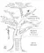

2015
Mars
Février
Janvier
- 25 — Les types de discours dans le récit
- 08 — Bredebie et compagnie, nouvelle
- 05 — Comment savoir à quel registre appartient mon roman ? Annexe
- 04 — Comment savoir à quel registre appartient mon roman ? 4/4
- 04 — Comment savoir à quel registre appartient mon roman ? 3/4
- 04 — Comment savoir à quel registre appartient mon roman ? 2/4
- 03 —  Comment savoir à quel registre appartient mon roman ? 1/4
2014
Décembre
- 31 — Préparer son livre à l'impression 3/3 (par Diatomée)
- 30 — Le narrateur
- 27 — Préparer son livre à l'impression 2/3 (par Diatomée)
- 25 — Les temps du récit
- 23 — J’ai une idée… Qu’est-ce que j’en fais ?! 2/2
- 21 — Préparer son livre à l'impression 1/3 (par Diatomée)
- 18 — J’ai une idée… Qu’est-ce que j’en fais ?! 1/2